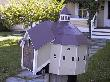
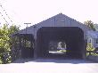
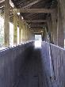
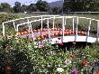
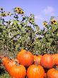
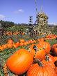
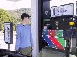

Mail box
Covered bridge
Inside the covered bridge
Pumpkins at a farm shop

More pumpkins
Pumpkins on a bridge
Pumpkins and sunflowers
Pumpkins with farm buildings
Rich re-fuels
We decided to go for a swim before breakfast and so got our swimmers and towels and headed down to the barn. We pulled the covers back and Rich set off, it took me a while to get in (the water felt a bit chilly). I swam a couple of lengths when I saw something green and bloated in front of me, a dead frog. That was too much and we both got out. The pool had dead insects in it, which didn't seem so bad, but a dead frog. Yeuch!
We went to breakfast and had some more good food. Then back to the room for a steam and a shower before packing up and heading off. We stopped off pretty soon at a farm and country shop that we'd spotted yesterday, all to take photos of pumpkins!
Today was to be another long drive, although mostly on Interstates. We stopped for lunch in Manchester, and ate at LaLa's Hungarian Pastry which was a real good feed before driving on. We hit quite a lot of traffic around Boston which slowed us down quite a bit.
We arrived in Provincetown shortly before it got dark and checked into "the Carriage House Hotel" which is a lovely place (apart from the shower in our room which is a bit damp). We unpacked, had showers and took it easy for a while before heading off in search of food. Our host suggested "Napi's" and once we'd checked out the menu we agreed. We wandered off, found Napi's, drank Margeritas and I had my first whole lobster experience of New England - complete with apron, napkin and towelette - which was great if a bit messy.
(9 images.)| 
Mail box | 
Covered bridge | 
Inside the covered bridge |
Pumpkins at a farm shop |
|
More pumpkins | 
Pumpkins on a bridge | 
Pumpkins and sunflowers | 
Pumpkins with farm buildings |
| 
Rich re-fuels |